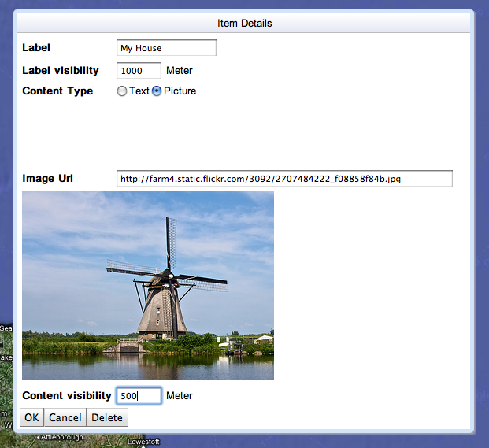

Betelgeuse Designer - Getting Started
The Betelgeuse Designer can be used to create dimensions (virtual worlds) that can be viewed in the iBetelgeuse augmented reality browser for iPhone and the Gamaray augmented reality browser for Android.
Follow these steps to create your dimension:
- If you haven't done so yet, open the Betelgeuse Designer.
- Find the location where you want to add something to your dimension, by:
- panning the map using your mouse,
- zooming the map using your scroll wheel, or
- looking for a particular location using the search box at the bottom of the map.
Note: zooming the map by double clicking is currently not possible.
- Click on a location on the map to add a new item to your dimension at that location.
- Enter the item details:
- Enter a name for the label and adjust the label visibility, if necessary. A label with the entered name will be displayed in the augmented reality browser when you are within this many meters of the item's location.
- Choose a content type and enter a description (in the case of the text content type) or enter the URL of an image (in the case of the picture content type).
- Adjust the content visibility if necessary. The text or picture will be displayed in the augmented reality browser when you are within this many meters of the item's location.
Example:

- Click the OK button to confirm your changes.
- Repeat from step 2 if you want to add more items to your dimension.
- Enter the dimension details at the top left of the screen:
- Enter a title for the dimension.
- Enter your e-mail address.
Note: instructions on how to load and edit the dimension will be sent to this address.
- Click the Save button to save the dimension.
- At the e-mail address you entered, you will now receive instructions on how to load the dimension into your augmented reality browser. This message will also contain instructions on how to edit the dimension at a later time.
- Have fun!